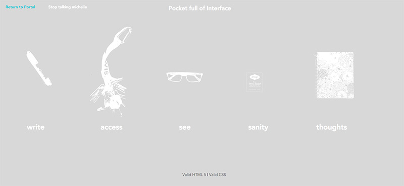
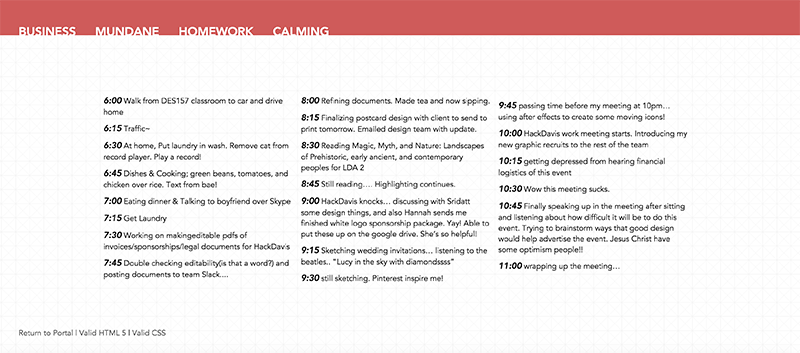

Ex 5 Summary | February 11th, 2016
For my ex5 I utilized three.js. Because this library is working with WebGL shapes, I decided to follow a tutorial and try to deal with that as opposed to creating something very designed. I wanted to tackle the challenge of actually understand the library first. So, I started by following the simple starter tutorial that was attached to the three.js website, making some basic shapes and just rotating them. I then looked up some tutorials online. The only one I could find that was relevant to my final project was written 4 years ago, so I spent quite a bit of time trying to get that to work, since the three.js library they were using from 4 years ago is very different from the library today. I think that this gave me really great practice and experience with the assets of the library. I broke the code down and looked at the concept, and then referred back to the current day documentation to rewrite the code.
I think that this library is very easy and useful for creating webGL shapes, and animating them to create an immersize scene. I think that if I was using an up-to-date tutorial it would have only taken me 30 minutes to make my starfield as opposed to 5 hours i spent on it last night (Crying inside). I would rate this library a 3/5 with 5 being the most difficult. It kind of has complicated concepts in it, like the camera and positining.
Three.js Library
Ex4 Analysis | February 4th, 2016

I connected my visual interface by having the first thing the users see are uncolored white images against a grey background. It is very boring looking, but when users hover over each section, a bar of color expands from the center of each column. This bright flash of color is eye catching. From there, users can click on the headers for a small sentence describing the section. One other aspect is the "Stop talking michelle" button which will clear away all of activated toggle paragraphs.
Ex3 Analysis | January 27th, 2016

Although my design is very simple for this page, I think that it makes the user experience very obvious and easy to understand. The 4 headers on the top act as tabs, and I feel as if users would be drawn to first go to click on them. I wanted everything to fit on one page, so I utilized a 3 column grid to keep the information nice and organized.
Credit Card Form | January 18th, 2016

Read Bill Derouchey's article/slideshow on Interface Design Here A form that I see often is a credit card form! This one specifically is from Amazon.com I think that this form is very straight forward, as it utilizes the same formatting as a credit or debit card-- the card number on top, your eyes wandering down to the name on the card, and then moving right to view the expiration and date. Even the image of what kind of card (visa, mastercard, discover) is kept in the same positioning to the right. It shows clear priority, clarity and purpose. The hierarchy is clear, the instructions appearing to the side and in box that shows a bit of depth, framing the portion where input is required. Everything that Derouchey brings up is used accordingly in this simple and straight to the point form.
Squarespace Interface | January 7th, 2016

To manage my portfolio website I utilize squarespace. The visual design of this interface is having a box with a menu on the left, and then within the box on the right is a live updated view of your website. Markers pop up as you hover over different parts of your website, allowing you to pick from a varity of choices such as galleries, textblocks, or widgets to place into your website. I think that this interface is very visually appealing; it utilizes a lot of white space and clean typography. I think that the section of interface regarding your website editing might be a little too undefined, as you do not know exactly what areas are editable until you find the exact spot to hover over.